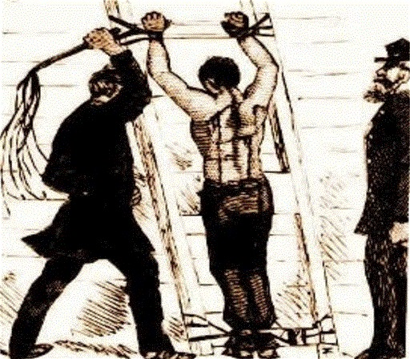

Com profunda indignação e justificado assombro, a Capital da Republica despertou nestes ultimos dias sob a mira dos formidaveis canhões de sua propria esquadra. Os gloriosos couraçados Minas Geraes e São Paulo, orgulhos da nossa engenharia naval e symbolos do progresso e da pujança do nosso regimen republicano, encontram-se sequestrados por uma horda de marinheiros insubordinados, que voltaram as armas da Nação contra o peito de seus proprios concidadãos.
Qual o pretexto para tal acção de felonia? A justa e regulamentar punição physica applicada a um marujo facinoroso, de nome Marcelino, que, num acto de extrema selvageria, ferira um companheiro de farda a navalhadas. Em defesa deste criminoso de baixa estyrpe, a marinhagem amotinou-se, assassinando officiaes nobres e tomando de assalto as machinas de guerra que a Republica, com tanto suor do erario publico, adquiriu na Europa para a nossa defesa.
Agora, um marinheiro de nome João Cândido ousa intitular-se, num arremedo grotesco, «Almirante», exigindo o fim dos castigos corporaes e amnistia, numa affronta directa á hierarchia, á disciplina e á ordem civilisada.
É forçoso reconhecer, meus senhores, que estes actos de barbárie são uma herança nefasta dos tempos obscuros do Imperio. A monarchia, que por decadas manteve o Brazil acorrentado ao atraso e á frouxidão moral, legou-nos esta ralé indisciplinada que confunde a liberdade republicana com a anarchia.
Querem fazer crer que a Republica falha onde o Imperador triumpharia, uma mentira deslavada e vil! Foi a Republica que trouxe a luz da modernidade a este paiz! Foi a Republica que nos equipou com os «Dreadnoughts», o que ha de mais avançado e terrível nos mares do mundo!

Illustração dos castigos corporaes applicados aos marujos
Todavia, as modernas machinas de aço estão nas mãos de homens de mentalidade retrograda, incapazes de comprehender a nobreza do dever e a elevação moral exigidas pelo novo seculo. O uso da chibata, que os amotinados tanto repudiam, revela-se agora não um capricho, mas um mal necessario para conter os instinctos bestiaes daquelles que não respondem á voz da rasão.
Não podemos olvidar que a hydra do retrocesso manifesta-se sob variadas máscaras. O que vemos hoje na Guanabara é o mesmo germen da ignorância que incendiou o sertão de Canudos. Lá, o fanatismo de um messias; aqui, a audacia de um 'almirante' de cor que pretende deitar por terra a disciplina republicana.
O problema que ora enfrentamos não é de brutalidade dos officiaes, como querem fazer crer os sentimentalistas de gabinete. É um problema de formação. Homens toscos, analphabetos, criados na mais crassa ignorancia, não podem aspirar ao tratamento que se dispensa a um cidadão esclarecido.
O governo não póde, sob hypothese alguma, curvar-se á chantagem de canhões apontados para o coração do Rio de Janeiro. Confiamos na rectidão e na firmeza de animo do Exm. Sr. Presidente da Republica, Marechal Hermes da Fonseca. A Republica é a ordem e o progresso, e não tolerará que a indisciplina monarchica e o motim se instaurem no seio da nossa gloriosa Marinha!
DEUS SALVE A REPUBLICA!
Marinheiros revoltosos armados no convés do navio